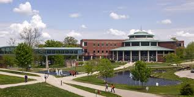

University Of Missouri-St. Louis

Yep, UMSL is the name of my school look at it, the Student Center really is something to look at.
- I learned how to be a outstanding working citizen of my society.
- I learned how think on my feet at the University, by that I mean quick witted, talkative, and resourceful with my time.
- I also learned that it was a good "Bang For Your Buck" school, "Really" I mean that, unlike other schools, UMSL didn't charge me an arm and a leg and fortunately my debt won't be large upon graduation.
- I learned the most important listen of all, how to have fun even when some of the professors won't allow the class to be fun.
- UMSL is also where I started being a puppeteer, are you ready for "The Final Show?"